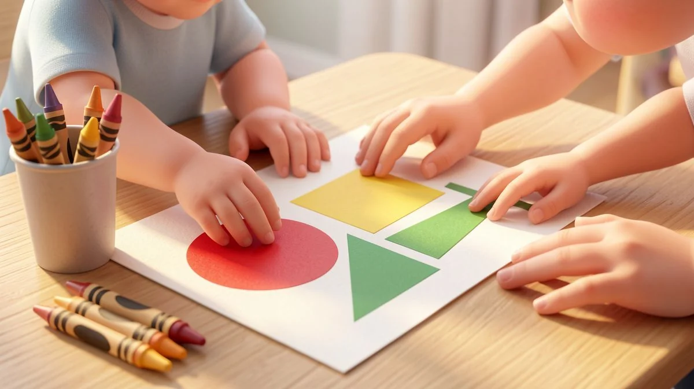
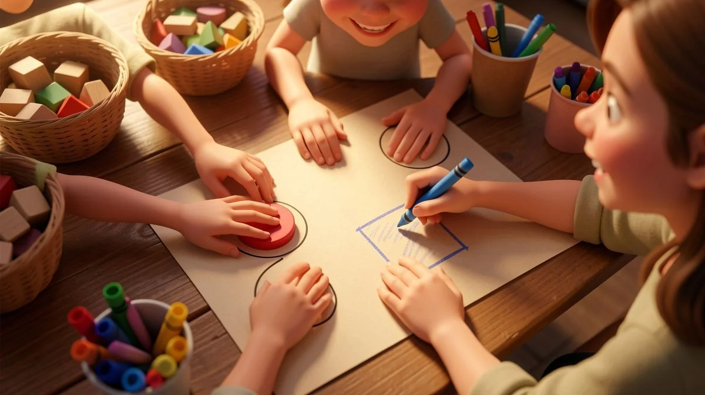
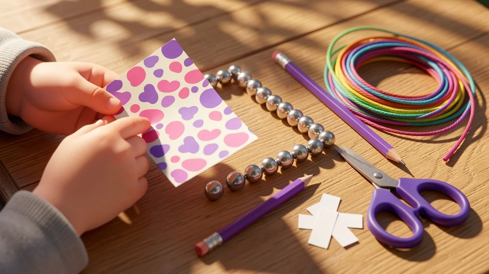
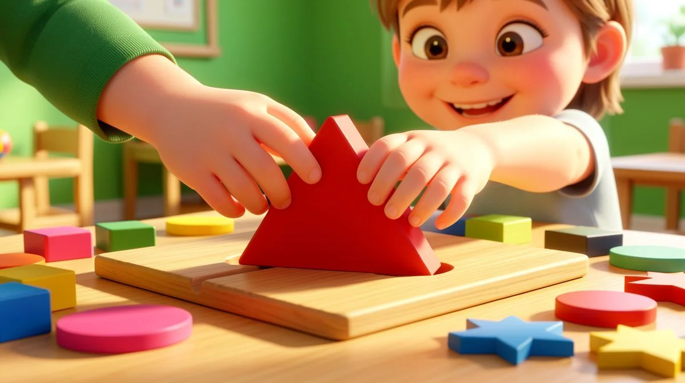
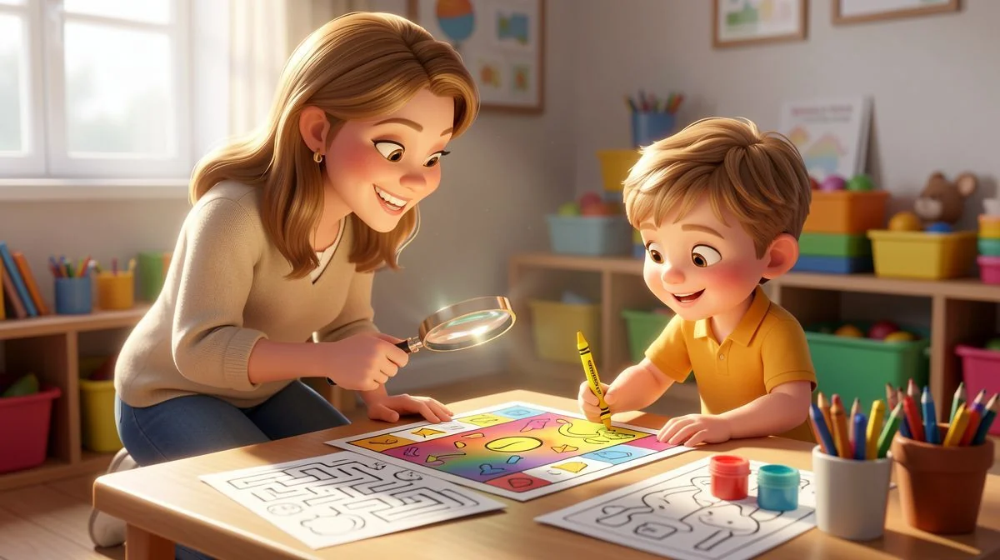

📑 Table of Contents
- Why Visual Perception Activities Are Essential for Child Development
- Top 6 Visual Perception Activities for Preschool Learning
- How to Develop Fine Motor Skills Through Visual Activities
- Best Age-Appropriate Visual Perception Resources
- Essential Hands-On Learning Strategies for Educators
- Proven Cognitive Skills Development Through Visual Play
Why Visual Perception Activities Are Essential for Child Development
Let me tell you something I see all the time. A bright, chatty four-year-old gets frustrated trying to put a simple puzzle together. They can't figure out which way the piece turns. Or they mix up a 'b' and a 'd' when we're playing with letter magnets. It's not about intelligence. Not at all.
It's almost always a gap in visual perception skills. And that's exactly why we need to focus on them early. When it comes to visual perception activities for preschoolers, parents have many great options.
What is Visual Perception and Why It Matters
It's more than just seeing. Vision is what the eyes do. Visual perception is what the brain does with that information. It's the mental process of organizing and interpreting shapes, colors, positions, and patterns. Think of it as your child's internal GPS and pattern decoder, all in one.
When they pour water from a tall cup into a wide bowl, they're using visual perception to judge volume and space. When they find their red shoe in a messy closet, they're using visual discrimination. These aren't just games. They're the bedrock of learning. This is especially helpful for visual perception activities for preschoolers.
The Science Behind Preschool Brain Development
Here's the thing. Between ages 3 and 6, the brain's visual processing pathways are being wired at an incredible rate. Neural connections are being made—or pruned away—based on experience. This is the prime window. We're not just filling a bucket with facts; we're literally helping to build the highway system their future learning will travel on.
Research is clear: a huge amount of classroom learning is visual. From following a teacher's chart to recognizing sight words to understanding a number line. If the visual processing system is shaky, everything else feels harder. It leads to avoidable frustration. I've seen it turn eager learners into reluctant ones.
Start simple. A two-year-old matching socks is building a foundation. A five-year-old copying a bead pattern is preparing for math equations. It's a progression. This is especially helpful for visual perception activities for preschoolers.
"I used to think my son was just being careless when he reversed letters. After focusing on visual perception games for a few months, that confusion just vanished. It was like his eyes and brain finally started talking to each other." – Maya, parent of a 5-year-old.
How Visual Skills Connect to Academic Success
This connection is direct. Let's break it down.
- Reading: Before a child sounds out "c-a-t," they must see the difference between a 'c' and an 'o.' They need to track words left to right. That's visual discrimination and tracking.
- Math: Understanding that the numeral '4' represents a quantity, recognizing patterns in a hundreds chart, lining up numbers to add. All visual.
- Writing: Staying on the line, forming letters the correct size and orientation, spacing words. This is visual-motor integration in action.
Ignoring these skills is like building a house on sand. You can have the best phonics program or the coolest math manipulatives, but if a child's visual perception is fuzzy, they're working with a blurry map. For a deeper look at developmental stages, our free child development checklist can be a real help.

Top 6 Visual Perception Activities for Preschool Learning
Okay, enough theory. Let's get practical. You don't need fancy kits. You just need a little intention. Here are my top six picks for visual perception activities for preschoolers that actually work.
1. Color Matching and Sorting Games
This is your entry point. It seems basic, but it's powerful. For a young three-year-old, start with just three bold colors. Use anything: pom-poms, blocks, even pieces of colored paper.
The goal? Sort them into matching cups or onto colored construction paper. The magic happens when you add a tool, like a spoon or toddler tweezers. Now they're also building fine motor skills. It's a two-for-one.
Pro tip: Use natural items too. "Can you find all the green leaves?" It connects the activity to their real world.
2. Shape Recognition and Pattern Activities
Move from color to form. Start with simple shape sorters, but then get creative. Draw shapes on paper and have them "trace" the outline with beans or buttons. This highlights the contour.
Patterns are next. Begin with an ABAB sequence (circle, square, circle, square). Use stickers, stamps, or cereal. Let them copy your pattern first, then continue it, and finally, create their own. When they master that, try ABC. This is pre-algebra, folks.
We have some great printable pattern cards in our educational resources section if you want a ready-to-go option.
3. Visual Memory and Sequencing Exercises
This is a favorite. The classic "What's Missing?" game. Place 4-5 small objects on a tray (a spoon, a key, a block, a toy car). Let your child study them for 15 seconds. Cover the tray with a cloth and remove one item. Can they identify what's gone?
It's brilliant. It forces them to hold a visual picture in their mind. You can also do sequencing: lay out three picture cards that tell a simple story (seed, sprout, flower). Mix them up. Can they put them back in order? This builds narrative skills alongside visual memory.
- Shadow Matching: Create or find cards where objects are matched to their shadows. This strips away color and detail, forcing the brain to focus purely on form and outline.
- Simple Mazes and Dot-to-Dots: Start with wide-path mazes. The goal is visual tracking and planning. Dot-to-dots reinforce number or letter order and reveal a picture—a great reward for their visual effort.
- “I Spy” with a Twist: Go beyond colors. "I spy something that is a rectangle" (the book). "I spy something that starts with the letter 'S' and has stripes" (the shirt). This combines visual scanning with other cognitive skills.
Honestly, the best activity is the one your child will actually do. Keep it light. Keep it playful. Ten focused minutes beats an hour of struggle. And remember, you're not just playing. You're building the visual toolkit they'll use for a lifetime of learning.
How to Develop Fine Motor Skills Through Visual Activities
Here's a truth I've seen in every classroom: visual skills and hand skills grow together. You can't really separate them. When a child's eyes guide their hands, magic happens. Their confidence soars. So let's talk about making that connection strong.

Tracing and Pre-Writing Exercises
Start big. I mean it. Give a three-year-old a fat crayon and a huge sheet of paper with a simple, thick-lined path. Maybe it's a wavy road for a toy car to drive down. The goal isn't perfect lines. It's control. I always add a big green dot for "GO" and a red dot for "STOP." This simple visual cue gives them a target. It makes the abstract idea of "start here" totally concrete.
Progress slowly. By age four, those paths can get narrower. Try dotted lines to trace. The visual challenge increases—they have to connect the dots. Their little hands learn to pause and aim. It's a workout for their eyes and fingers.
Cutting and Pasting with Visual Guides
Scissors are scary for parents. I get it. But with the right visual setup, they're a powerhouse tool. Don't just hand a child scissors and paper. That's overwhelming. Give them a mission.
Start with a strip of cardstock that has a straight, bold black line from left to right. Their job is to cut the line. Sounds simple. It's not. They have to visually track that line while coordinating both hands. Next, draw a simple square or triangle for them to cut out. The shape is the visual guide. They have to turn the paper to follow the edges.
Then, add pasting. Give them a blank sheet with a simple outline drawing—a house, a tree. Their cut-out shape goes in a specific spot. They have to match it visually. This is where it all clicks. They're not just cutting and pasting. They're solving a visual-spatial puzzle with their hands.
Beading and Threading Patterns
This is one of my secret weapons. It's quiet, focused, and incredibly effective. But we have to move beyond random beading. The key is the visual pattern.
Create a pattern card. For a young three-year-old, it might just be a photo of a finished string with two big beads: red, then blue. Their job is to replicate it. They have to scan the card, identify the color, find the matching bead, and thread it. That's four visual-motor steps!
For older preschoolers, make the patterns more complex: red, blue, red, blue. Or triangle bead, circle bead, triangle bead. They have to hold the pattern in their visual memory while executing it. It builds sequencing skills vital for math and reading. Honestly, if you only do one activity from this section, make it this one. You can find more fine motor activities that work perfectly in a group setting in our classroom activities guide.
Remember, the goal is steady progress. Celebrate the wobbly line. Cheer for the snipped edge. Those are the real signs of growth.
Best Age-Appropriate Visual Perception Resources
Not all resources are created equal. What dazzles a five-year-old will frustrate a three-year-old into tears. The trick is matching the tool to the child's developmental stage. Let's break it down by age. This isn't about being rigid—it's about setting them up for success.

Activities for 3-4 Year Olds (Simple Matching)
Keep it big, bold, and simple. At this age, their visual system is still learning to focus and discriminate.
- Large Matching Cards: Use photos of everyday objects—a shoe, a cup, a ball. Make them big, with a plain background. Start with just three pairs. The visual clutter is zero, so they can focus on "same" and "different."
- Color Sorters: Get a muffin tin and large pom-poms. Put a single red pom-pom in one cup and a blue one in another. Their job is to sort. The visual cue is clear and the motor demand (dropping a pom-pom) is manageable.
- Basic Puzzles: Think wooden knob puzzles where each piece is a whole, familiar shape. The visual outline is clear, and the knobs help their hands succeed. It’s a perfect marriage of visual perception and fine motor skill.
The mantra here is: one clear visual task at a time.
Resources for 4-5 Year Olds (Pattern Recognition)
Now we introduce sequences. Their brains are ready to predict "what comes next?" based on what they see.
You don't need fancy kits. Use what you have.
- Create a pattern with breakfast cereal: Cheerio, Cheerio, Raisin. Repeat it. Then ask them to continue it. They have to visually analyze the sequence and replicate it.
- Use building blocks for pattern cards. Take a photo of a simple block tower (red, blue, red). Can they build the same one? This adds a 3D visual-spatial layer.
- Introduve simple "what's missing?" games. Line up three toys: bear, car, bear. Hide one and ask what's gone. This builds visual memory.
These activities lay the groundwork for math and logic. The National Association for the Education of Young Children has great research on how patterning fuels cognitive development.
Challenges for 5-6 Year Olds (Complex Visual Tasks)
These kids are getting ready for kindergarten. They can handle more detail and longer visual tasks. The resources should challenge them to integrate multiple visual skills.
"Find the Differences" pictures are fantastic. Start with two pictures that have 3-5 obvious differences. They must scan, compare, and identify. It builds sustained attention and visual discrimination.
Complex puzzles with 24-48 pieces are great. So are tangrams—using geometric shapes to fill an outline. They have to rotate shapes in their mind's eye. That's advanced visual processing.
Another winner: grid games. Think simple Battleship-style games where they have to find a hidden object using visual coordinates (like "B3"). This links visual perception to early math concepts. For a deep materials perfectly tailored for this stage, explore our age-specific learning activities bundles. They take the guesswork out of what comes next.
Always watch their frustration level. A good challenge is engaging. A too-hard challenge shuts them down. When in doubt, step back to a previous stage and build back up. The journey matters more than the specific resource.
Essential Hands-On Learning Strategies for Educators
Let's be honest. Planning a week of engaging visual perception activities for preschoolers can feel like a puzzle itself. You need stuff that works, not just looks cute on Pinterest. The goal is to build skills they'll use every single day, from reading a book to tying their shoes.

Here's the thing: passive observation doesn't cut it. Kids need to do. They need to touch, sort, build, and sometimes make a glorious mess. That's where true learning sticks.
Setting Up Visual Learning Centers
Forget complicated setups. Think simple, focused, and kid-managed. The magic is in the independence.
I like to create 4-5 compact stations. Each one targets a specific skill. A matching station with texture cards. A sorting station with buttons of different sizes and colors. A pattern station with colored pegs and boards.
The key? Clear visual instructions. I use a small poster with photos of a child doing the task. Step one, step two, done. I also add a self-checking feature. For a matching game, I might draw a small colored dot on the back of matching pairs. The child can flip them over to see if the colors match. Instant feedback. Zero teacher intervention needed. It builds confidence like nothing else.
Differentiating Activities for Mixed Abilities
Every classroom has a range. One child is breezing through patterns while another struggles to see the difference between a square and a circle. And that's perfectly normal. Your job isn't to make everything one-size-fits-all. It's to meet each child right where they are.
I use a simple color-coded system at each station. Green baskets hold the "getting started" materials. Maybe it's matching just four large, high-contrast shapes. Yellow baskets are for "give it a go" – perhaps eight smaller shapes. Red baskets offer the "challenge" for kids who are ready, like matching subtle shades of the same color.
The child chooses their level. There's no stigma. They often move themselves up to yellow or red when they feel ready. It’s powerful to watch. For more on this, I've shared some of my favorite frameworks in our pedagogy resources.
Incorporating Formative Assessment Techniques
Assessment sounds formal. It doesn't have to be. I'm not giving tests. I'm watching and listening.
Keep a clipboard with a quick observational checklist for each child. Just a few skills you're targeting that month. "Can discriminate between a triangle and a square." "Can complete an ABAB pattern." "Can recall a 3-item visual sequence."
You jot notes during free play. You see it all then. Who gets frustrated when blocks don't line up? That's spatial awareness. Who can find the tiny hidden object in a picture book first? That's visual scanning. These tiny observations tell you exactly what to work on next. It turns everyday play into actionable data.
Proven Cognitive Skills Development Through Visual Play
We call it play. Their brains are doing serious work. Every matching game, every puzzle piece snapped into place, is forging new neural pathways. It's the foundation for everything that comes later.
Think about reading. It's not just knowing letters. It's tracking from left to right, distinguishing a 'b' from a 'd', and remembering what the word looked like three sentences ago. That all starts here.
Building Visual Memory with Games
Visual memory is like a mental photo album. Can they hold a picture in their mind? Start simple.

The classic 'Memory Match' game is gold. But tailor it. For my 4-year-olds, we start with just 6 pairs of cards face down. The pictures are bold and very different—a red apple, a blue car. For the 5-year-olds ready for a challenge, we ramp it up to 12 pairs. The images get trickier—two different dogs, or a spoon and a fork.
Another winner? The "What's Missing?" game. Put three objects on a tray. Let them stare for ten seconds. Have them cover their eyes. Remove one object. Can they identify the gap? It’s a blast. And it works.
Developing Spatial Awareness Activities
This is about understanding where things are in relation to each other. It's critical for math, science, and not bumping into doors!
Block building is the ultimate spatial lab. Don't just give them blocks. Give them a mission. Start with 2D visual blueprints. I print out simple patterns made of squares and rectangles. "Can you build this flat picture with your blocks?"
Then, level up to 3D. Show a photo of a simple tower from two different angles. Can they recreate it? The conversations are amazing. "I think the big one goes on the bottom." "This one is behind that one." They're thinking in three dimensions. For more structured ideas, check out some of our favorite building and engineering activities.
Enhancing Problem-Solving with Visual Puzzles
Puzzles teach a child that there's a solution. They just have to find it. It builds persistence.
Tangrams are my go-to. Start with the outline guides. The silhouette of a cat made from seven classic shapes. The child has to manipulate the triangles and squares to fill the outline. It requires rotation. Mental flipping. Trial and error.
The moment of "I got it!" is pure joy. That struggle is where the learning happens. They're analyzing spatial relationships, testing hypotheses, and correcting mistakes. It's the whole scientific method in a wooden puzzle. You can find a fantastic set of beginner puzzles in our products section that are perfect for this stage.
Remember, the best activities feel like a game. The skill development is the hidden bonus. Keep it light. Keep it fun. The growth will follow.
Love Learning Activities?
Discover our free printable worksheets and premium resources:
🏷️ Related Tags
Frequently Asked Questions
What are visual perception activities for preschoolers?
Visual perception activities are games and exercises that help children interpret and understand what they see. These include matching games, pattern recognition, shape sorting, and visual memory exercises that develop crucial pre-reading and spatial skills between ages 3-6.
How do visual activities help child development?
Visual activities develop multiple cognitive skills simultaneously. They improve hand-eye coordination for writing readiness, enhance pattern recognition for math skills, build visual memory for reading comprehension, and develop spatial awareness for problem-solving - all foundational for academic success.
What age should you start visual perception activities?
Start simple visual activities at age 2-3 with basic matching games. Progress to pattern recognition at 3-4, shape discrimination at 4-5, and complex visual puzzles at 5-6. Always match activities to developmental readiness rather than chronological age alone.
How can parents support visual development at home?
Parents can use everyday items for visual activities: sort laundry by color, create patterns with breakfast cereal, play 'I Spy' for visual scanning, and provide simple puzzles. Consistency matters more than complexity - 10-15 minutes daily of focused visual play yields significant benefits.
Are visual perception activities effective for classroom learning?
Yes, visual activities are highly effective in classrooms. Research shows they improve attention span by 40%, enhance following visual instructions, and prepare children for reading and math. Teachers report better engagement and reduced frustration when visual skills are systematically developed.